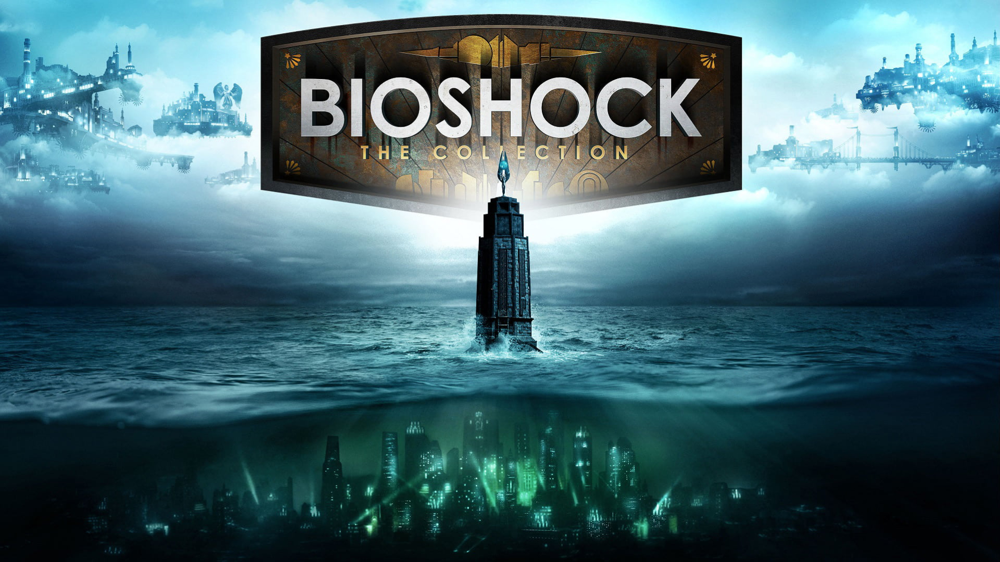

Guia sobre el juego Bioshock
Introduccion
Imagínate que estás en un avión que te llevará de camino a tu familia. Imagínate que, por circunstancias desconocidas, ese avión se estrella en mitad del océano, dejándote como única guarida una extraña torre que te has encontrado por absoluta casualidad. Imagínate que allí encuentras un extraño vehículo que te lleva a una sociedad utópica construida para que el hombre lleve a la realidad todos sus sueños. Ahora, observa que dicha ciudad está sumida en el caos: sus habitantes, adictos a cierta sustancia, buscan asesinarte. Además, La única forma de escapar de allí es inyectártelo tú también, matar a cualquiera que se interponga en tu camino y pasar un auténtico infierno para llegar a la salvación. Rapture es un lugar desconcertante, sin duda. Sus habitantes, la poca gente que conserva cordura y que te ayudará en tu periplo, y los enigmáticos Big Daddies y Little Sisters serán las claves para comprender qué has de hacer y por qué. Los plásmidos, el EVE y el codiciado ADAM también resultarán fundamentales para poder sobrevivir. Además de tus inseparables armas, claro.
¿QUÉ ENCONTRARÁS EN ESTA GUÍA?
En esta guía te intentamos llevar por todos los resquicios de Rapture indicándote todas las localizaciones de plásmidos, tónicos, Little Sisters, grabaciones y cualquier otro elemento a destacar dentro de este laberíntico pero asombroso lugar. Como siempre, puedes enviarnos un correo a esta dirección y contactaremos contigo lo antes posible.
Y recuerda lo que dijo el creador de Rapture, Andrew Ryan: "todos hacemos elecciones... pero al final, nuestras elecciones nos hacen a nosotros".